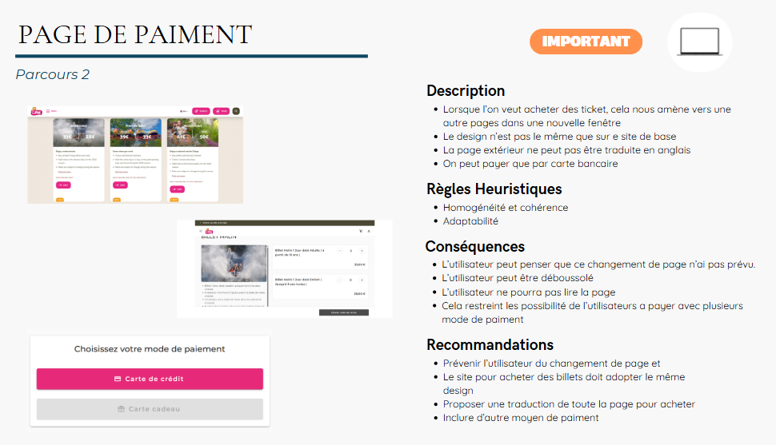
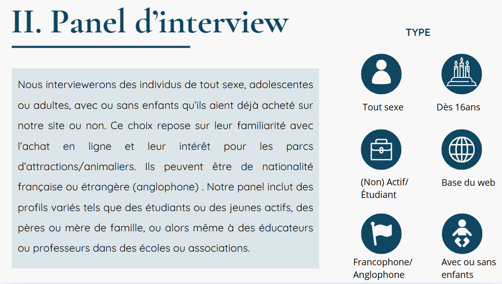

SAE 2.01 - Explorer les usages du numérique
Réalisé en mars 2025 dans le cadre du BUT MMI
Objectifs
Cette SAÉ vise à explorer les principes fondamentaux de l'UX Design en se concentrant sur la compréhension des comportements des utilisateurs et de leurs besoins spécifiques. L'objectif est de réaliser une étude approfondie pour identifier les attentes et les frustrations des utilisateurs du site du PAL. À travers des entretiens et des analyses, nous avons construit des profils types et extrait des insights pour améliorer l'expérience utilisateur. L'objectif final est de proposer des recommandations pour une refonte du site, en mettant l'accent sur l'ergonomie et l'expérience utilisateur.

Démarche
Notre approche a été structurée en plusieurs étapes clés :
- Audit du site du PAL pour identifier les problèmes d'ergonomie et d'expérience utilisateur.
- Création d'un guide d'entretien et réalisation de six entretiens avec des utilisateurs non étudiants en MMI.
- Analyse des entretiens : retranscriptions, extraction d'insights, création de profils types (personae).
- Production des livrables : dossier d'étude ethnographique, présentation orale et support visuel.

Livrables
Les livrables de ce projet incluent :
- Un dossier d'étude ethnographique complet avec l'audit, le guide d'entretien, les enregistrements, les transcriptions et les formulaires de consentement.
- Une présentation orale de 15 minutes pour présenter nos résultats et recommandations.
- Un support de présentation visuel pour illustrer notre méthode et nos résultats.

Bilan
Cette SAÉ a été une expérience enrichissante qui m'a permis de découvrir de manière concrète le domaine de l'UX Design. En menant des entretiens utilisateurs, j'ai développé des compétences en communication et en écoute active, essentielles pour comprendre les attentes et les frustrations des utilisateurs. Ce projet m'a également sensibilisé à l'importance de l'analyse des usages pour concevoir des services numériques efficaces.
Travailler en binôme a été formateur, car cela m'a appris à collaborer et à confronter mes idées avec celles d'un partenaire. Enfin, la présentation orale m'a permis de m'exercer à présenter un projet de manière professionnelle. En résumé, cette SAÉ m'a apporté une vision plus concrète du métier d'UX designer et a renforcé mon intérêt pour les approches centrées sur l'utilisateur.
Compétences développées
Présenter une organisation et son environnement, en mettant l'accent sur les aspects économiques, sociologiques et technologiques.
Produire et interpréter des analyses statistiques pour évaluer un contexte socio-économique.
Réaliser des entretiens utilisateurs pour construire des profils types et des récits utilisateurs.